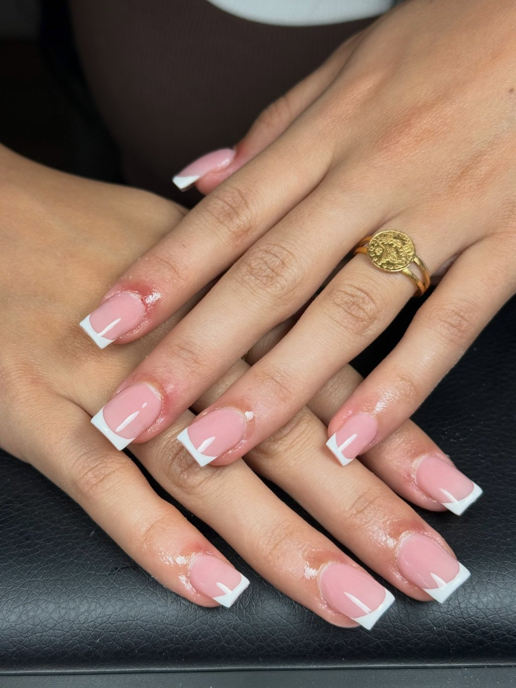
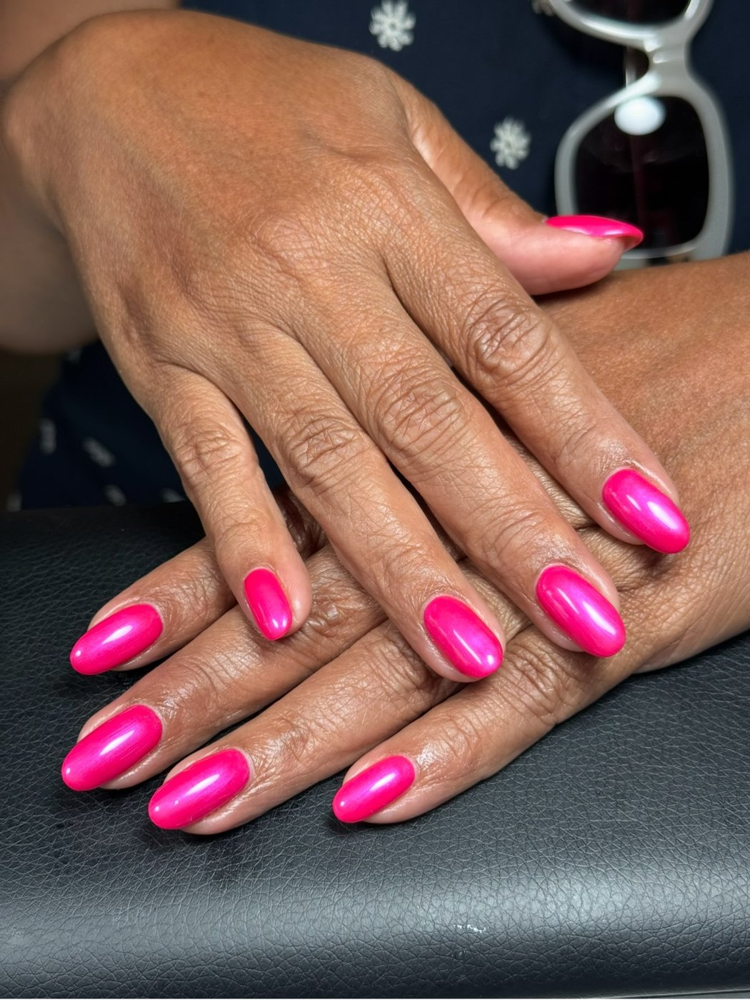
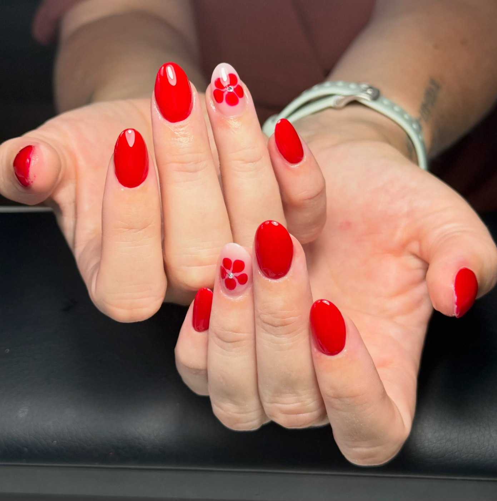
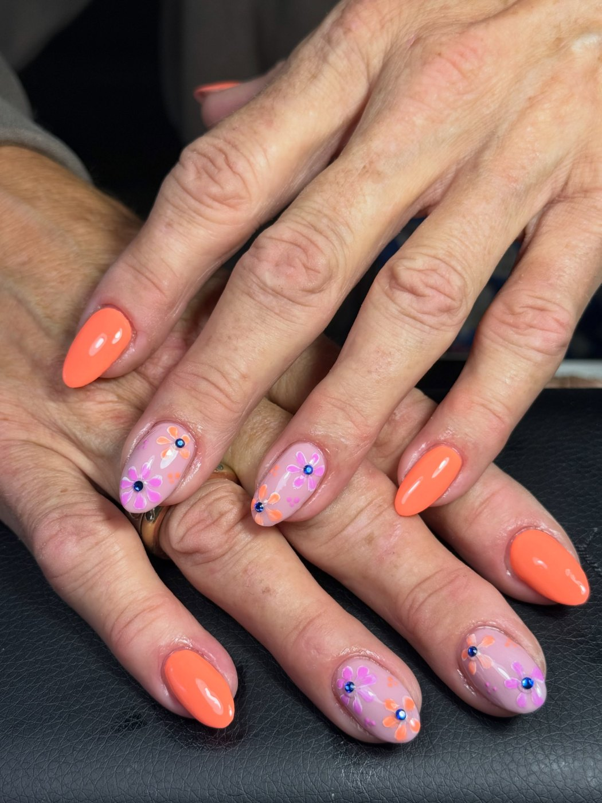
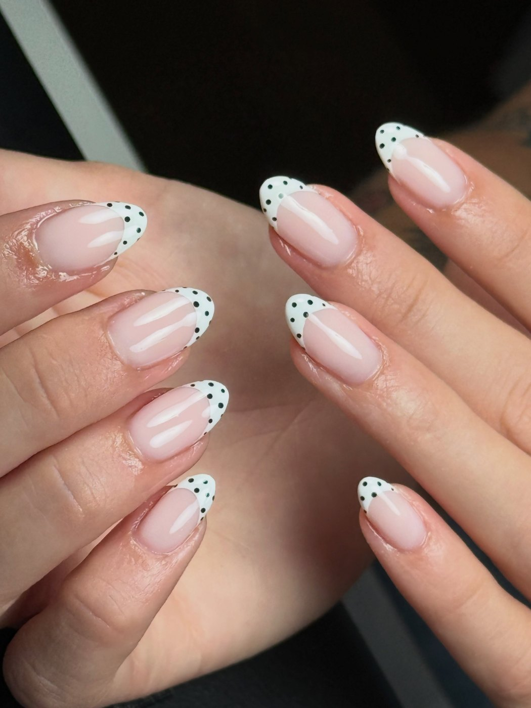
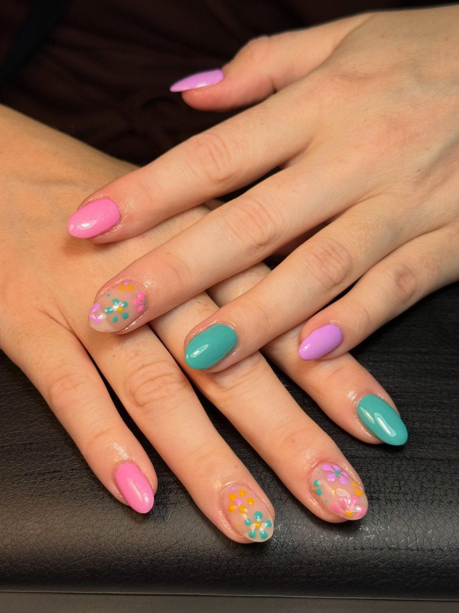
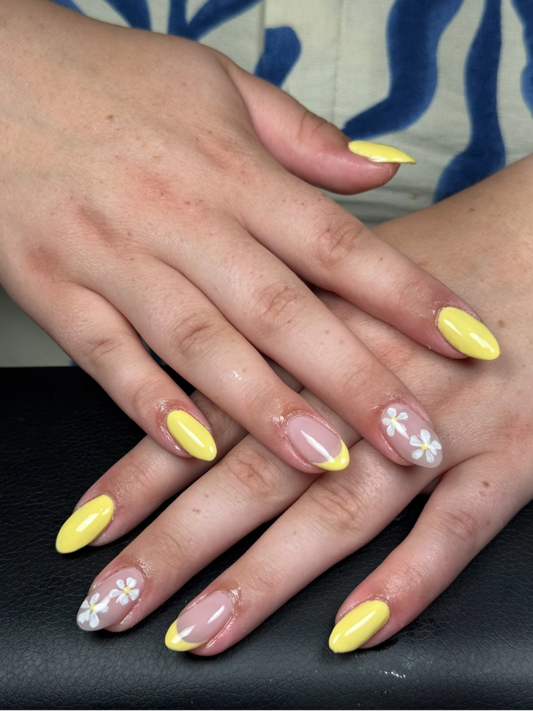
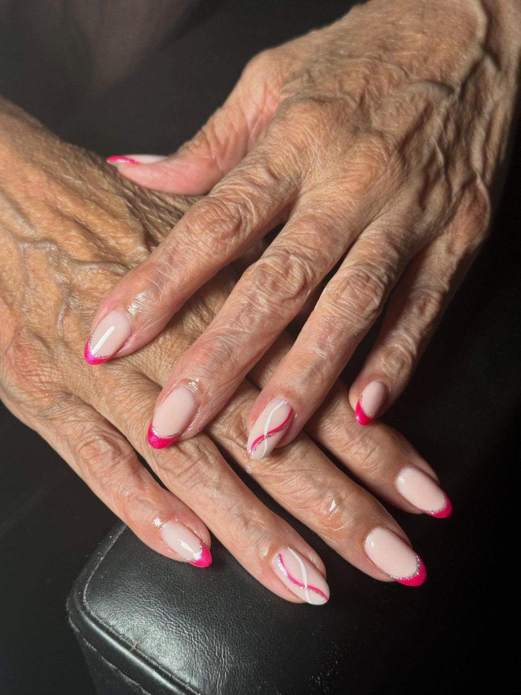

Openingstijden laden
Elke dag open, ook 's avonds
Nagelstudio aan het Hofveld in Apeldoorn. Zeven dagen per week van negen tot acht, dus er is altijd een moment dat u schikt.
- 4,9 uit 41 beoordelingen op Google
- Ook als u nagelbijt of dunne nagels heeft
- Klanten schrijven dat u snel antwoord krijgt via WhatsApp
Werk uit de studio
Acryl, BIAB, gellak en met de hand geschilderde nail art. Alles hieronder is echt werk van Hanh.







Meer werk staat op Instagram, bij @nagelsbijhanh.
Kunt u niet komen? Dan kom ik naar u toe.
Niet iedereen kan makkelijk de deur uit. Naast de studio aan het Hofveld werkt Hanh ook op locatie, zodat mensen die slecht ter been zijn evengoed verzorgde nagels houden.
Vraag er gerust naar in uw bericht, dan wordt er samen gekeken wat kan.
Waarvoor u bij Hanh terecht kunt
Een nieuwe set
Acryl of BIAB, met of zonder verlenging. In de lengte en vorm die u zelf mooi vindt.
Bijwerken
Uitgroei wegwerken zodat het weer strak zit, meestal na drie tot vier weken.
Gellak en nail art
Van een effen kleur tot met de hand geschilderde bloemen. Ook manicure en pedicure.
Vraag een afspraak aan in een halve minuut
U kiest wat u wilt laten doen en wanneer het schikt. Meer hoeft niet, Hanh appt u terug om een tijd af te spreken.
- 1U vult het in. Vier vinkjes, uw naam en uw nummer.
- 2Uw bericht staat klaar in WhatsApp. U leest het na en drukt zelf op verzenden.
- 3Hanh appt terug met een tijd die past. Klanten schrijven dat dat snel gaat.
Wat klanten schrijven
Uit de beoordelingen op Google.
“Ik kom nu al een jaar bij Hanh en kan zeggen dat ik nergens anders meer heen ga.”
Emiel Reinders“Ontzettend tevreden over mijn nagels. Ze werkt heel professioneel en neemt echt de tijd voor je.”
Asli Ozmen“Heel blij met mijn nagels. Reageert snel op WhatsApp om een afspraak te maken.”
Delhia TesterinkOpeningstijden
| Maandag | 09:00 tot 20:00 |
|---|---|
| Dinsdag | 09:00 tot 20:00 |
| Woensdag | 09:00 tot 20:00 |
| Donderdag | 09:00 tot 20:00 |
| Vrijdag | 09:00 tot 20:00 |
| Zaterdag | 09:00 tot 20:00 |
| Zondag | 09:00 tot 20:00 |
Zeven dagen per week, ook op zondag. Werken gaat op afspraak, dus stuur even een bericht.
Waar u ons vindt
Nagels bij Hanh
Hofveld 124A
7333 BM Apeldoorn
06 22424456